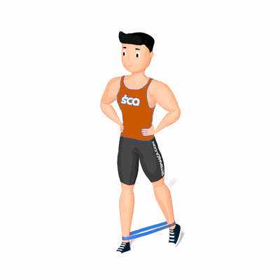

Glúteo com Faixa Elástica

O exercício tem como objetivo fortalecer músculos dos glúteos e isquiotibiais.
Ficha Técnica
Tipo: Funcional
Grupo Muscular: Glúteo
Aparelho: Nenhum
Músculos: Nenhum
Como realizar
- Coloque a faixa em volta dos tornozelos e fique com os pés afastados na largura do quadril;
- Envolva os músculos centrais, transfira o peso para uma perna e, com a perna oposta, chute lentamente para trás cerca de
- 15 a 20 centímetros;
- Inverta o movimento com controle e, com o pé levantado, bata suavemente no chão logo atrás do pé plantado.
 RC STORE
RC STORE